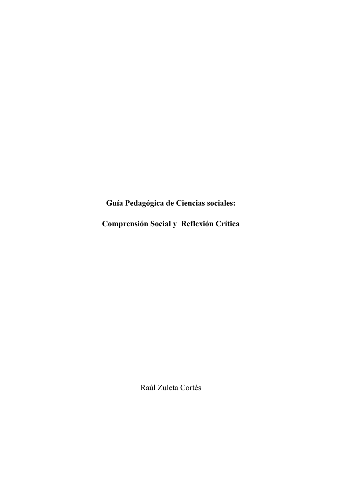

Pedagogical manuscript · Completed in 2024 · 241 pages
Guía pedagógica de ciencias sociales
The Guía pedagógica de ciencias sociales: comprensión social y reflexión crítica (Teaching Guide to the Social Sciences: Social Understanding and Critical Reflection) brings together materials developed while I was teaching on Sociology and Special Education degree programmes between 2020 and 2023.
The project began as a series of notes that helped me connect required readings with the structure of each course. Over time, these texts incorporated examples, activities, assessments and resources for further study. In 2024, I finished reorganising them into a unified manuscript intended primarily for teachers.

Process
From notes to a guide
When I began teaching, I needed to build learning pathways that brought together texts from different traditions. The notes emerged as a way to organise those readings and provide a shared sequence around which I could structure my classes.
As I shared them with students and used them in new courses, the materials began to change. I added examples connected to students’ experiences and activities through which they could observe, discuss and apply the concepts.
Writing the manuscript was not simply a matter of gathering those documents. I needed to address repetition, fill gaps in the content, establish a progression and turn materials designed for specific situations into resources that other people could reuse.
Organisation
A progressive structure
The guide is organised into four parts and eight chapters:
- Foundations of the social sciences, with an introduction to scientific knowledge and its production.
- Social psychology, with content on interaction, influence and contemporary perspectives.
- Intersections among the social sciences, focused on their relationships with education and economics.
- Contemporary debates in sociology, devoted to more complex theoretical problems.
Each chapter includes learning objectives, an introduction, conceptual development, resources for further study, activities, notes and references. The manuscript also includes a glossary that can be used to review content or prepare new teaching materials.
Reformulation
Recognising a change of audience
The project was initially conceived as an introductory book for students. As I wrote it, however, I realised that its length and density did not always match the accessible reading experience I had imagined.
Rather than conceal that difficulty, I reframed the manuscript as a guide for teachers. Its activities, questions and resources could serve as a repertoire from which materials could be selected and adapted for different courses.
This shift changed the meaning of the project. The guide no longer seeks to offer a single, self-contained introduction to the social sciences. Instead, it makes available a structure of content and activities that emerged from a particular teaching practice.
The guide does not claim to represent the social sciences exhaustively. Its selection reflects the courses I taught, the syllabuses I worked with and the teaching challenges I encountered during that period.
Authorship
My contribution
I wrote and organised the entire manuscript. This involved turning notes and assessment materials into chapters, selecting and connecting content, developing examples and activities, incorporating resources for further study and constructing the glossary.
The text was developed within CIPSE-UCEN while I worked at the centre. Marco Cofré wrote the foreword and Fernando Varela helped prepare the manuscript.
Editorial status and access
Complete manuscript
The manuscript was completed in 2024 and is under contract with the Editorial de la Universidad Central de Chile. The publishing process remains pending.
Read the full manuscript →